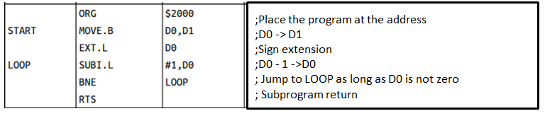

Introduction to Assembly Language
Home
What is the Assembly Language ?
Layout of a source code (part_1)
Layout of a source code (part_2)
Example of 68000 assembly language source code:
Source code contains one instruction per line. An instruction is divided into four separate fields:
